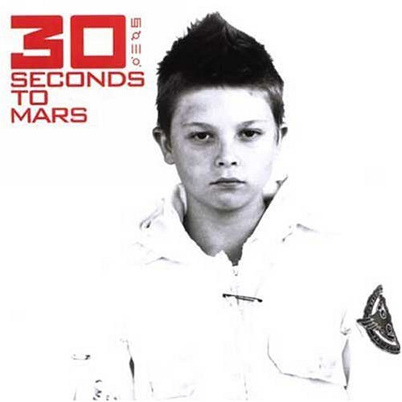
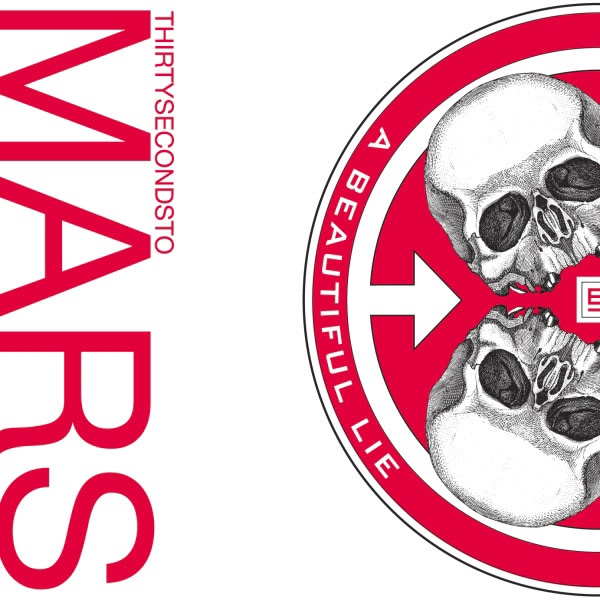

|

|
- 30 Seconds To Mars (2002)
- Capricorn (A Brand New Name)
- Edge of the Earth
- Fallen
- Oblivion
- Buddha for Mary
- Echelon
- Welcome to the Universe
- The Mission
- End of the Beginning
- 93 Million Miles
- Year Zero
- The Struggle (Hidden Track)
|
|
|

|
- A Beautiful Lie (2005)
- Attack
- A Beautiful Lie
- The Kill
- Was It a Dream ?
- The Fantasy
- Savior
- From Yesterday
- The Story
- R-Evolve
- A Modern Myth
- Praying for a Riot
- Battle of One
- Hunter
|
|